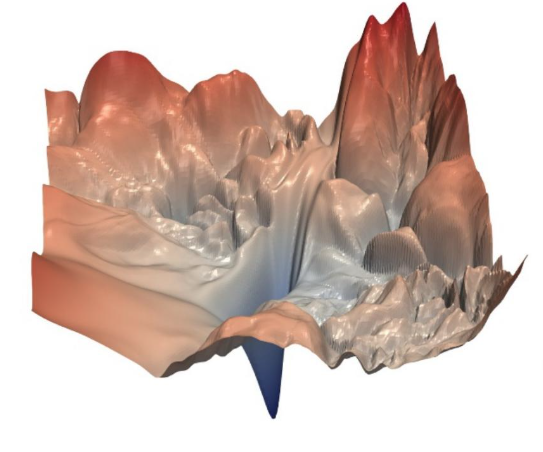
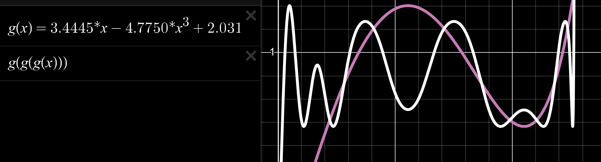

Muon
Sources:
- www.lakernewhouse.com/writing/muon-1
- www.lakernewhouse.com/writing/muon-2
- Muon is Scalable for LLM Training
This post does not talk about the Newton-Schulz orthogonalization in detail, just about the general intuitions behind Muon.
Let \(\theta \in \mathbb{R}^d\) be the parameters of our neural network.
We have a differentiable loss function \(\mathcal{L}: \mathbb{R}^d \to \mathbb{R}\) that tells us how good our model performs.
We want to successively update \(\theta^{(0)} \to \theta^{(1)} \to \dots \to \theta^{(T)}\) such that \(\theta^{(T)} \approx \underset{\theta}{\operatorname{argmin}}{\mathcal{L}(\theta)}\).
Let \(\Delta \theta\) denote an update to our parameters (a small change). Updates are applied as follows \[ \theta^{(t+1)} \gets \theta^{(t)} + \Delta \theta. \]
We can thus frame the problem of finding a good update \(\Delta \theta\) as \[ \Delta\theta^{(t)} \gets \underset{\Delta \theta}{\operatorname{argmin}}{\mathcal{L}(\theta^{(t)} + \Delta\theta)}. \]
A Taylor expansion yields \[ \mathcal{L}(\theta + \Delta\theta) = \mathcal{L}(\theta) + \nabla_{\theta}\mathcal{L}(\theta)^T \cdot \Delta\theta + \frac{1}{2} \Delta\theta^T \cdot \nabla^2_{\theta}\mathcal{L}(\theta) \cdot \Delta\theta + \dots \]
In first-order methods (such as SGD, Adam and Muon) we only use gradient information (we only look at the slope) \[ \mathcal{L}(\theta + \Delta\theta) \approx \mathcal{L}(\theta) + \nabla_{\theta}\mathcal{L}(\theta)^T \cdot \Delta\theta, \] looking at the curvature (Hessian) is very useful, however, for large neural networks with millions of parameters it is too computationally expensive (\(\nabla^2_{\theta}\mathcal{L}(\theta) = \mathbf{H} \in \mathbb{R}^{d \times d}\)).
At their core, gradient-based approaches have to manage the tension between (A) taking a sufficiently large step in the direction of the slope, and (B) not taking a step that too far given that the slope only provides limited information.
Okat, let’s continue looking at our finding-the-update problem, which we can now express as \[ \Delta\theta \gets \underset{\Delta \theta}{\operatorname{argmin}} \mathcal{L}(\theta) + \nabla_{\theta}\mathcal{L}(\theta)^T \cdot \Delta\theta, \] and note that we can discard the constant, giving us \[ \Delta\theta \gets \underset{\Delta \theta}{\operatorname{argmin}} \nabla_{\theta}\mathcal{L}(\theta)^T \cdot \Delta\theta. \]
There is an issue here: because this proble is linear and unconstrained, no minimizer exists. We must add a constraint. Interestingly, different constraints (or penalties) on \(\Delta \theta\) will allow us to recover many first-order methods, including Muon. Another way of putting it (the constraint) is to say that we have to pick a mesure of what “one step” is.
To illustrate what I mean, let’s add the following penalty \[ \Delta\theta \gets \underset{\Delta \theta}{\operatorname{argmin}} \nabla_{\theta}\mathcal{L}(\theta)^T \cdot \Delta\theta + \frac{1}{2 \cdot lr} \Vert \Delta \theta \Vert_2^2, \] setting the derivative to 0 and solving for \(\Delta \theta\) yields \[ \Delta \theta \gets -lr \cdot \nabla_{\theta} \mathcal{L}(\theta), \] the classic SGD update.
One thing we can observe with SGD is that the step we take depends on the magnitude of the gradient. This makes sense: if the slope is steep, it seems reasonable to take a larger step, to converge faster. However, recall that this gradient information is only valid over a short distance, and that we can not trust it over large distances. (Probably there are many other reasons why this is bad in chaotic loss landscapes.)

Let’s try something different \[ \Delta\theta \gets \underset{\Delta \theta}{\operatorname{argmin}} \nabla_{\theta}\mathcal{L}(\theta)^T \cdot \Delta\theta \;\; \text{ subject to } \Vert \Delta \theta \Vert_{\infty} \leq lr, \] where the \(l_{\infty}\) norm is defined as \(\underset{i}{\max} \vert \Delta\theta_i \vert\).
Thsi time, solving for the update yields signSGD \[ \Delta \theta \gets -lr \cdot \operatorname{sign}\left(\nabla_{\theta} \mathcal{L}(\theta)\right). \]
This is interesting, because now the update does not depend on gradient magnitude, only on its direction. This can be seen as a simple (extreme) way of bypassing the issues mentioned above: just take a fixed step no matter what the underlying gradient is.
We saw how two different constraints/penalties recover two well-known optimizers, and we discussed the idea of setting a measure of what one-step is. We can move on to Muon.
At its core, Muon is about setting a different constraint in our update problem (such like signSGD used the \(l_{\infty}\)) norm).
First, Muon is an optimizer for hidden matrix parameters only (linear layers that map dense activations to dense activations). \(\to\) This probably means that the constraint it uses is only defined for matrices.
From now on we will instead focus on the update of a hidden matrix \(\mathbf{W} \in \mathbb{R}^{\text{out} \times \text{in}}\). For convenience let’s denotes its gradient as \(\mathbf{G} = \nabla_{\mathbf{W}} \mathcal{L}(\theta)\).
The non-matrix parameters (e.g. biases) are typically optimized using AdamW.
Okay so, what is a matrix ? A matrix is a linear transformation, it takes a vector and transforms it. The constraint we want to use is about what matrices do rather than just looking at their individual entries.
Let’s begin by defining a measure of size for a vector \(\mathbf{x} \in \mathbb{R}^{d}\).
We will use the RMS norm \[ \Vert \mathbf{x} \Vert_{\text{RMS}} = \sqrt{ \frac{1}{d} \sum_{i=1}^{d}{x_i^2}} \] which basically is an \(l_2\) norm that is invariant to the number of the dimensions of our vector.
We can now define our measure of matrix “size” \(\to\) the RMS-to-RMS norm \[ \Vert \mathbf{W} \Vert_{\text{RMS} \to \text{RMS}} = \max(\{ \Vert \mathbf{Wx} \Vert_{\text{RMS}} : \Vert \mathbf{x} \Vert_{\text{RMS}} = 1 \}). \]
This norm measures the maximum stretch performed by the matrix \(\mathbf{W}\). So it is a measure of what the matrix does, rather than the individual entries it contains. Nice.
Let us (once again) re-formulate our problem using our new constraint \[ \Delta\mathbf{W} \gets \underset{\Delta \mathbf{W}}{\operatorname{argmin}} \operatorname{tr}(\mathbf{G}^T \cdot \Delta\mathbf{W}) \;\; \text{ subject to } \Vert \Delta \mathbf{W} \Vert_{{\text{RMS} \to \text{RMS}}} \leq 1. \]
We have just defined what “one step” was, this also means that the learning rate can be interpreted each step changes the layer’s output by at most about \(lr\)% of its typical size.
The RMS-to-RMS norm can be rewritten in terms of the matrix spectral norm \(\Vert \Delta \mathbf{W} \Vert_2 = \sigma_{\max}\) as follows \[ \Vert \Delta \mathbf{W} \Vert_{{\text{RMS} \to \text{RMS}}} = \sqrt{\frac{\text{in}}{\text{out}}} \cdot \Vert \Delta \mathbf{W} \Vert_2, \] we rewrite our problem using this spectral norm \[ \Delta\mathbf{W} \gets \underset{\Delta \mathbf{W}}{\operatorname{argmin}} \operatorname{tr}(\mathbf{G}^T \cdot \Delta\mathbf{W}) \;\; \text{ subject to } \sigma_{\max} \leq \frac{1}{\sqrt{\text{in} / \text{out}}}. \]
Since we are now dealing with singular values, let us replace both \(\mathbf{G}\) and \(\Delta \mathbf{W}\) by their singular value decompositions \(\mathbf{G} = \mathbf{U \Sigma V}^T\) and \(\Delta \mathbf{W} = \bar{\mathbf{U}} \bar{\mathbf{\Sigma}} \bar{\mathbf{V}}^T\) \[ \Delta\mathbf{W} \gets \underset{\Delta \mathbf{W}}{\operatorname{argmin}} \mathbf{V}_{\mathbf{G}} \mathbf{\Sigma}_{\mathbf{G}} \mathbf{U}^T_{\mathbf{G}} \mathbf{U}_{\Delta\mathbf{W}} \mathbf{\Sigma}_{\Delta\mathbf{W}} \mathbf{V}^T_{\Delta\mathbf{W}} \quad \text{ subject to } \Vert \Delta \mathbf{W} \Vert_{{\text{RMS} \to \text{RMS}}} \leq 1. \] and note that \(\text{subject to } \Vert \Delta \mathbf{W} \Vert_{{\text{RMS} \to \text{RMS}}} \leq 1\) now simply means \(\text{subject to } \mathbf{\Sigma}_{\Delta\mathbf{W}} = I\). Indeed, if we have a “budget” of at most 1 for each singular value, we might as well use it fully. This simplifies the problem \[ \Delta\mathbf{W} \gets \underset{\mathbf{U}_{\Delta\mathbf{W}} \mathbf{V}^T_{\Delta\mathbf{W}}}{\operatorname{argmin}} \mathbf{V}_{\mathbf{G}} \mathbf{\Sigma}_{\mathbf{G}} \mathbf{U}^T_{\mathbf{G}} \mathbf{U}_{\Delta\mathbf{W}} \mathbf{V}^T_{\Delta\mathbf{W}} \quad \text{ subject to } \mathbf{U}_{\Delta\mathbf{W}}, \mathbf{V}^T_{\Delta\mathbf{W}} \text{ orthogonal}. \] and the solution to this is to maximize alignment, that is \(\mathbf{U}_{\Delta\mathbf{W}} \mathbf{V}^T_{\Delta\mathbf{W}} \gets -\mathbf{U}_{\mathbf{G}}\mathbf{V}^T_{\mathbf{G}}\). The last step is re-multiply by the factor \(\sqrt{\frac{\text{in}}{\text{out}}}\) giving us the Muon update rule \[ \Delta \mathbf{W} \gets -lr \cdot \frac{\text{in}}{\text{out}} \cdot \mathbf{U}_{\mathbf{G}}\mathbf{V}^T_{\mathbf{G}}. \]
The operation that consists in setting the singular values of \(\mathbf{G}\) to be all equal to 1 is called orthogonalization.
However, computing the SVD for each layer at each iteration would be prohibitively expensive. Instead, Jeremy Bernstein found a way to do this in a much more efficient manner.
The method is called Newton-Schulz orthogonalization.
